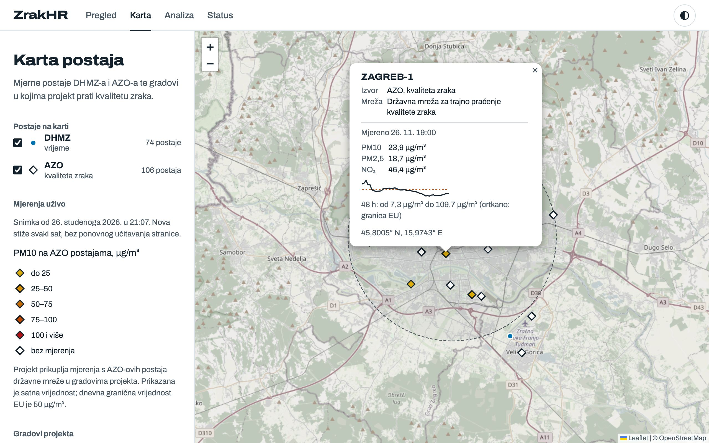

Sveučilište u Rijeci, Tehnički fakultet · Diplomski studij računarstva · ak. god. 2026./2027.
Programiranje skriptnih jezika — Projektni zadatak, II. kontrolna točka
Sustav za periodičko prikupljanje, analizu i vizualizaciju podataka o vremenu i kvaliteti zraka u hrvatskim gradovima
| Članovi tima | Matej Brodarac, Bruno Bezjak |
|---|---|
| Tema | 2 — periodičko preuzimanje podataka putem API-ja, strukturiranje i vizualizacija |
| Repozitorij | https://github.com/Matej2405/ZrakHR |
| Projekt uživo | https://matej2405.github.io/ZrakHR/ — otvara se u pregledniku, bez instalacije |
| Datum | 27. 11. 2026. |
U I. kontrolnoj točki glavni izvor bio je Open-Meteo, a HNB-ova tečajna lista trebala je pokazati proširivost na drugu domenu. Nakon povratne informacije nastavnika izvori su promijenjeni. Istraživačko pitanje traži izmjerene vrijednosti, a Open-Meteo daje modelske podatke (CAMS na mreži od oko 11 km), pa mjerenja sada dolaze iz službenih hrvatskih izvora. Open-Meteo ostaje samo kao prognoza, a HNB je izbačen jer ne pridonosi istraživačkom pitanju. Pitanje je zato prošireno: koliko je točna prognoza zagađenja u usporedbi s izmjerenim vrijednostima?
| Izvor | Podaci | Uloga u projektu |
|---|---|---|
| DHMZ (vrijeme.hr, XML) | temperatura, vlažnost, tlak i vjetar s 60–75 postaja, ovisno o satu | mjerenja; feed sadrži samo tekući sat, pa se prikuplja svaki sat |
| AZO, Kvaliteta zraka u RH (REST, JSON) | PM10, PM2.5, NO₂ i O₃ s 11 postaja državne mreže u gradovima projekta | mjerenja; portal čuva povijest, pa se podaci mogu dohvatiti i unatrag |
| Open-Meteo | prognoza vremena i CAMS prognoza PM10 i PM2.5 za pet gradova | samo prognoza, sprema se radi usporedbe s mjerenjima |
Plan za KT II iz prvog izvješća (adapteri za sve izvore, periodičko prikupljanje s ponavljanjem i logiranjem, SQLite shema, CLI i dohvat povijesti) ostvaren je u cijelosti, a dio plana za KT III (dashboard s kartom i prikazom uživo) napravljen je unaprijed. Svaki zadatak ima tiket na GitHub Projectu i pull request koji pregledava drugi član tima.
| Područje | Što je napravljeno | Pull requestovi |
|---|---|---|
| Kolektori (Python) | zajedničko sučelje izvora s ponavljanjem uz eksponencijalni odmak; DHMZ s čišćenjem (nemoguće vrijednosti se odbacuju uz razlog); AZO s dohvatom povijesti i pauzom zbog ograničenja portala; Open-Meteo prognoze s vremenom izdavanja i horizontom | #51, #57, #56 |
| Pohrana | SQLite shema (izvori, postaje, mjerenja, prognoze, pokretanja prikupljanja) bez duplikata; gradnja baze iz arhive sirovih odgovora | #55, #60 |
| Prikupljanje |
Bash skripta scripts/collect.sh u GitHub Actionsu: DHMZ svaki sat, AZO
svaka 3 sata, prognoze svakih 6 sati; sirovi odgovori u grani data; dnevna
provjera potpunosti
|
#53, #60, #64 |
| CLI |
zrakhr db init, collect, fetch,
import, check, stations, live;
izlazni kodovi za cron i skripte
|
#59, #62 |
| Web (TypeScript) | dashboard u Reactu; karta 74 DHMZ i 106 AZO postaja s mjerenjima uživo; automatska objava na GitHub Pages nakon svakog mergea | #43, #50, #62 |
| Testovi i CI | 69 pytest testova na Pythonu 3.10–3.15; lint, provjera tipova i 65 testova dashboarda; ShellCheck za Bash i actionlint za workflowe, na svakom pull requestu | #45 |
Od I. kontrolne točke (stanje 26. 11., bez merge commitova) Matej Brodarac ima 24, a Bruno Bezjak 8 novih commitova.
Dashboard je javno objavljen na
matej2405.github.io/ZrakHR i može se
provjeriti bez instalacije. Karta
postaja prikazuje AZO postaje u gradovima projekta obojene prema zadnjoj satnoj
vrijednosti PM10, a oblačić postaje pokazuje zadnja mjerenja i graf PM10 za 48 sati. Nakon
svakog prikupljanja naredba zrakhr live zapisuje snimku zadnjih mjerenja u granu
data, a dashboard je provjerava svakih 10 minuta, pa se podaci osvježavaju bez
poslužitelja i bez novog deploya.

| Izvor | Zapisa | Obuhvat | Potpunost |
|---|---|---|---|
| DHMZ mjerenja | 68 126 | 88 postaja, 7 veličina | 24/24 sata svaki dan od 19. 11. |
| AZO mjerenja | 8 160 | 11 postaja, 4 tvari | 24/24 sata svaki dan od 18. 11. |
| Open-Meteo prognoze | 173 630 | 5 gradova, 28 pokretanja prognoze vremena i 31 kvalitete zraka | do 22. 11. dva od četiri pokretanja dnevno, od 24. 11. sva |
Arhiva u grani data ima 514 sirovih odgovora (11 MB), iz kojih se baza može
izgraditi u svakom trenutku. Prvog dana (18. 11.) DHMZ ima samo 4 od 24 sata, jer je
GitHubov raspored izvršio samo dio zakazanih pokretanja.
Prosječni PM10 od 19. do 25. 11. iznosi u Zagrebu 30,2, Slavonskom Brodu 28,0, Osijeku 17,5, Splitu 13,1 i Rijeci 10,0 μg/m³. Zagreb i Slavonski Brod imaju dva do tri puta veće koncentracije od priobalnih Splita i Rijeke, što je obrazac iz definicije problema. Dnevni prosjek iznad granične vrijednosti EU (50 μg/m³) izmjeren je samo na dvije zagrebačke postaje, po jedan dan, a satne vrijednosti dosezale su 110,8 μg/m³. AZO objavljuje izvorne, još nevalidirane podatke.
workflow_dispatch, a raspored u workflowu ostaje rezerva.
data, a baza se iz njih gradi naredbom zrakhr import.